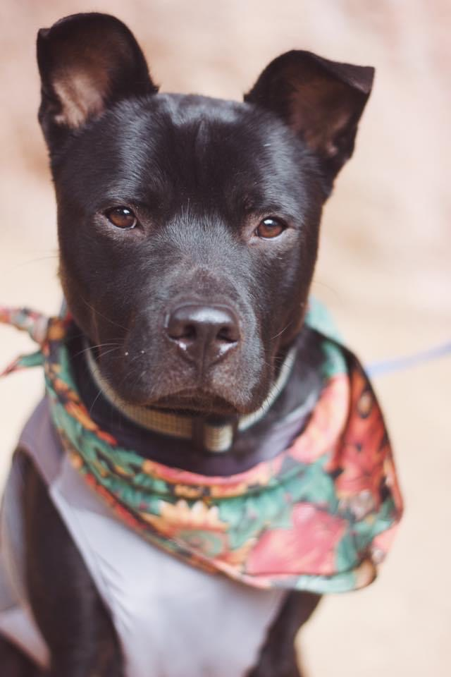
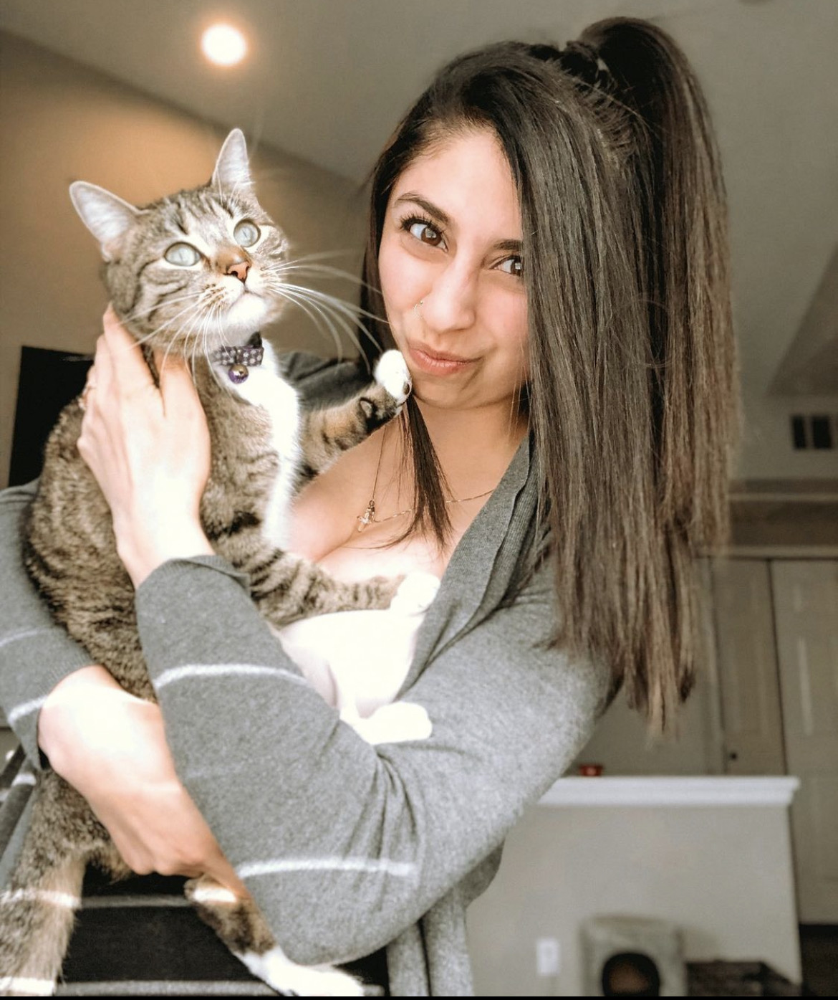
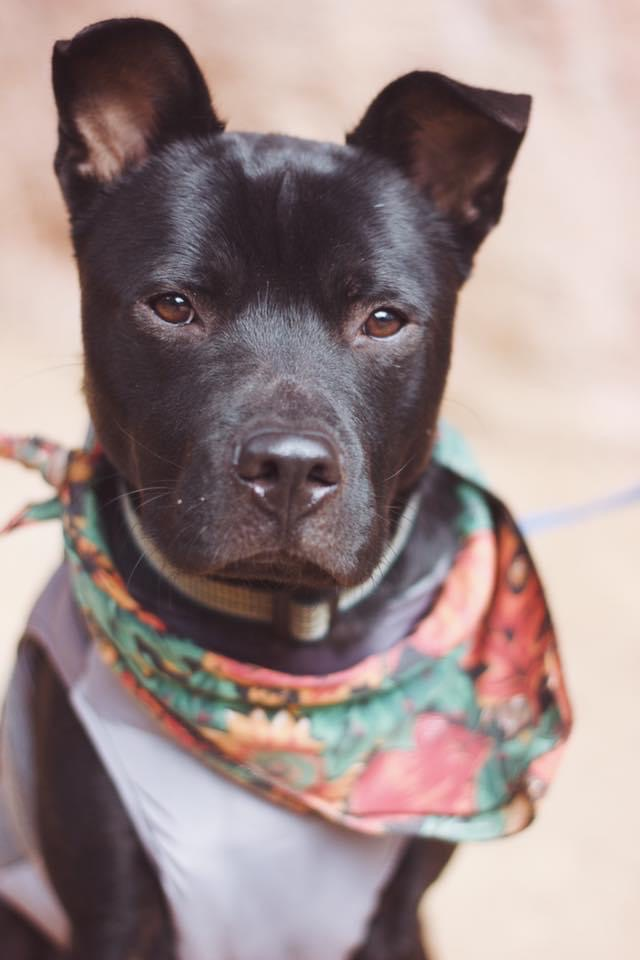
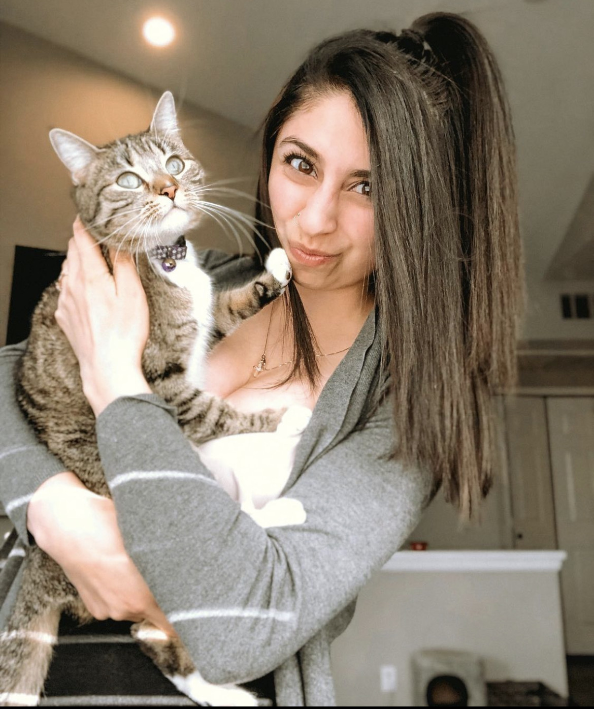

Hey there!! My name is Dominique Maxwell and I recently graduated from The University of Denver and received my certificate in UX/UI design!! I am a creative, detail oriented, and driven individual who is very passionate about design and I love working with others! I have learned to fall in love with the problem and not the solution, and I utilize empathy in order to find a deeper understanding of what my users need rather than jumping straight to conclusions. My background in finance shaped my ability to have empathy for all of my clients, hit deadlines early or on time, be fully present when my clients are speaking, master multi-tasking, and made me learn how to stay calm during frustrating or stressful situations. Most importantly, working in the financial world taught me how to be comfortable with public speaking and doing presentations. I was a part of a program called Wells at Work where I went to different High Schools and Colleges and taught students the importance of finance. I ended my Five year Career at Wells Fargo in June of 2021 in order to pursue my dreams of becoming a UX/UI Designer.

This program was great for me because it taught me the importance of deadlines, how to collaborate with others, how to be organized, and how to work quickly and efficiently. What I loved most about this program was that it taught me how to separate my emotions from work. I had many times where I would fall in love with a project and turn it in and my teacher would give us real life situations and make us redo the project because it wasn’t up to his standards or wasn’t what he was looking for. This made me understand the true importance of falling in love with the problem and not the solution. After High School, I began my career at Wells Fargo. I loved getting to work with clients everyday and teaching financial education but I knew this wasn’t what I truly wanted for myself. I continuously kept getting promoted and even though I felt very lucky and proud of all of my accomplishments, I was starting to feel stuck and was ready to find a career where I could find that creative spark again. I knew for a long time that the financial world was not for me, but because I had started to get higher up in the company, I had no idea how to find a way out. That was when I started doing a ton of research on different creative fields and discovered UX/UI design. I researched UX/UI for months and finally got the courage to reach out to a woman named Maddy Beard, a UX/UI designer who lived in Colorado and worked for Adobe. After meeting Maddy for Coffee and having her explain to me what the role was, I was hooked. I decided to take a leap of faith and quit my job of five years, move to Oregon with my husband to avoid all distractions and become a nanny so I could fully invest in the Denver University UX/UI Program.


I am a Colorado native who loves to spend time in the outdoors, loves being surrounded by people and I’m married to my High school sweetheart! We have been together for 10 years now and we are big time travel junkies. We have been to 11 countries so far together and we got engaged in the ballroom of the Neuschwanstein Castle in Germany. We got married on June 27, 2019 at the Manor house in Littleton Colorado. We now live in Bend Oregon with our dog Bruno and cat Zoey, If I’m not traveling, you can find me doing photography mountain biking, rock climbing, or snowboarding! I am always up for a new adventure and love the feeling of stepping out of my comfort zone, and facing my fears head on!

 


